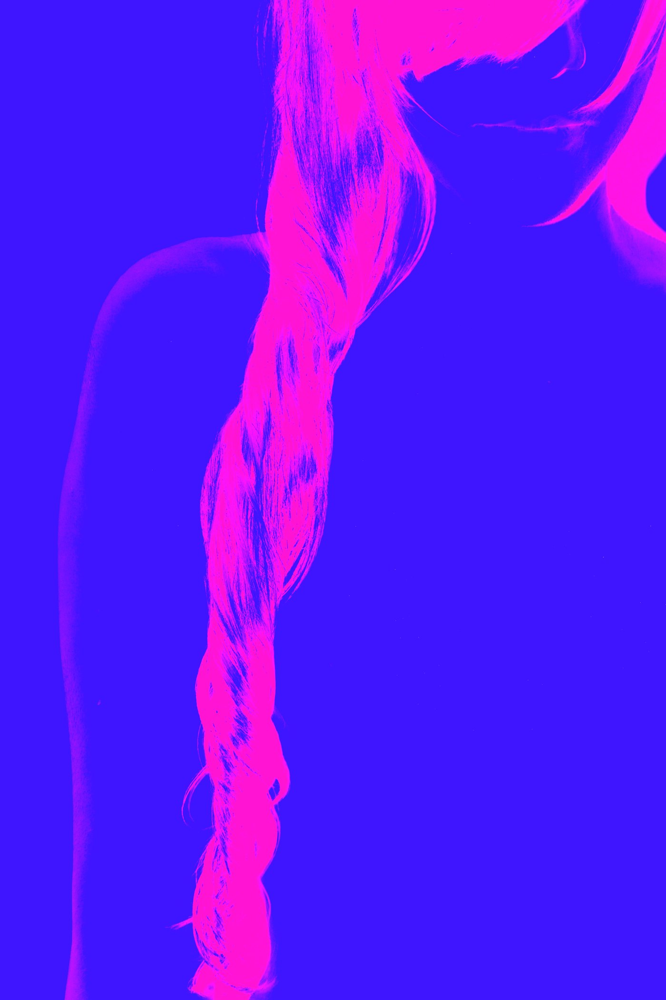

Work in the exhibition
The River, 2017
2017 · From the series Color Girl · Resin over printed canvas · 60 × 40 in
The Rice Collection of Cuban Art
The Rice Collection of Cuban Art
A braid of hair falls through the frame like water, rendered in saturated pink against a field of violet blue. The figure dissolves into color; what remains is the line of the braid, a current running from shoulder to edge.